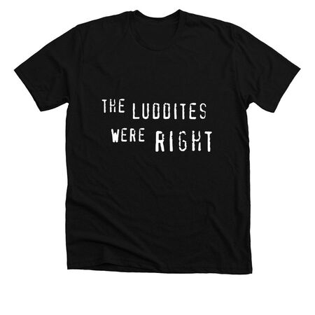

looking for the original 'the luddites were right' t-shirt?
you're in luck! you can buy this t-shirt through bonfire.
other t-shirt designs available: ascii art edition, annoying programmer edition
all products sold at cost. if you're feeling generous, you can add a tip via bonfire.
i also have a limited amount of the original black t-shirts that i screenprinted myself, which i am happy to sell to you for like $10 if we happen to be in the same place. i can also mail it to you if you cover shipping.
glad to have you as part of the neo-luddite movement, and be sure to read e.p. thompson if you haven't already.
another inexplicable project by @dellsystem.